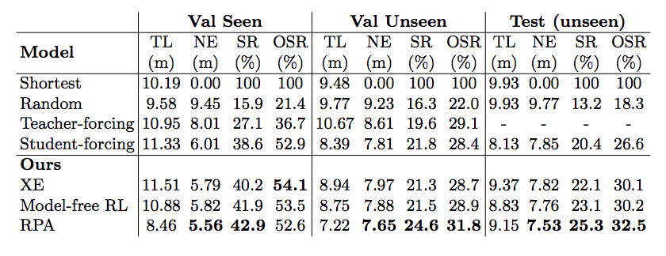

Reinforcement Learning Proposals
Created by Jiali Duan on Oct.30, 2018
Robot Manipulation
PPO/DDPG Benchmarking
 |
|---|
Challenges
- Sample Efficiency (A3C on Humanoid-Standup)
- Exploration
- Multi-task Transfer
Sim to Real Transfer Learning
Indoor Navigation
Look Before You Leap: Bridging Model-Free and Model-Based Reinforcement Learning for Planned-Ahead Vision-and-Language Navigation
- Model-free methods lacks generalization ability
- Propose to augment "imagination" via a look-ahead policy module
- Integrate vision with language instruction for indoor navigation
Task description

Components


# Recurrent policy model
e(t,i)=tf.matmul(h(t-1).transpose(),w(i))
a(t,i)=tf.exp(e(t,i))/tf.reduce_sum(tf.exp(e(t,k)), axis=1)
c(t)=tf.reduce_sum(a(t,i)*w(i))
h(t)=LSTM(h(t-1),[c(t),s(t),a(t-1)])
# Environment model
s(t+1)=fransition(fproj(st,at))
r(t+1)=freward(fproj(st,at))
Model Pipeline

Model Learning
- Pretrain environment model with immitation
- Freeze environment model and train policy model
# Immitation learning
Train environment model with Randomized teacher poclicy;
Pick demonstration policy with P=0.95;
Pick Bernouli Meta policy with P=0.05;
l_transition=E[s'(t+1)-s(t+1)]
l_reward=E[r'(t+1)-r(t+1)]
# Policy learning
r(st,at)=distance(s(t))-distance(s(t+1))
R(st,at)=discounted total sum of r
Perform REINFORCE algorithm on R
Result
- Trajectory length
- Navigation error (distance(vT, destination))
- Success rate (navigation error < 3m)
- Oracle success rate (min distance(vk, destination) < 3m)
Evaluation Metrics:

CVPR submission
Embodied Question Answering
- VQA: Vision + Language
- Visual Navigation: Visual + Action
- Embodied Question Answering: Vision + Language + Action
Human Robot Interaction
- DRL is interesting but requires competitive coding
- Human robot interaction is very promising